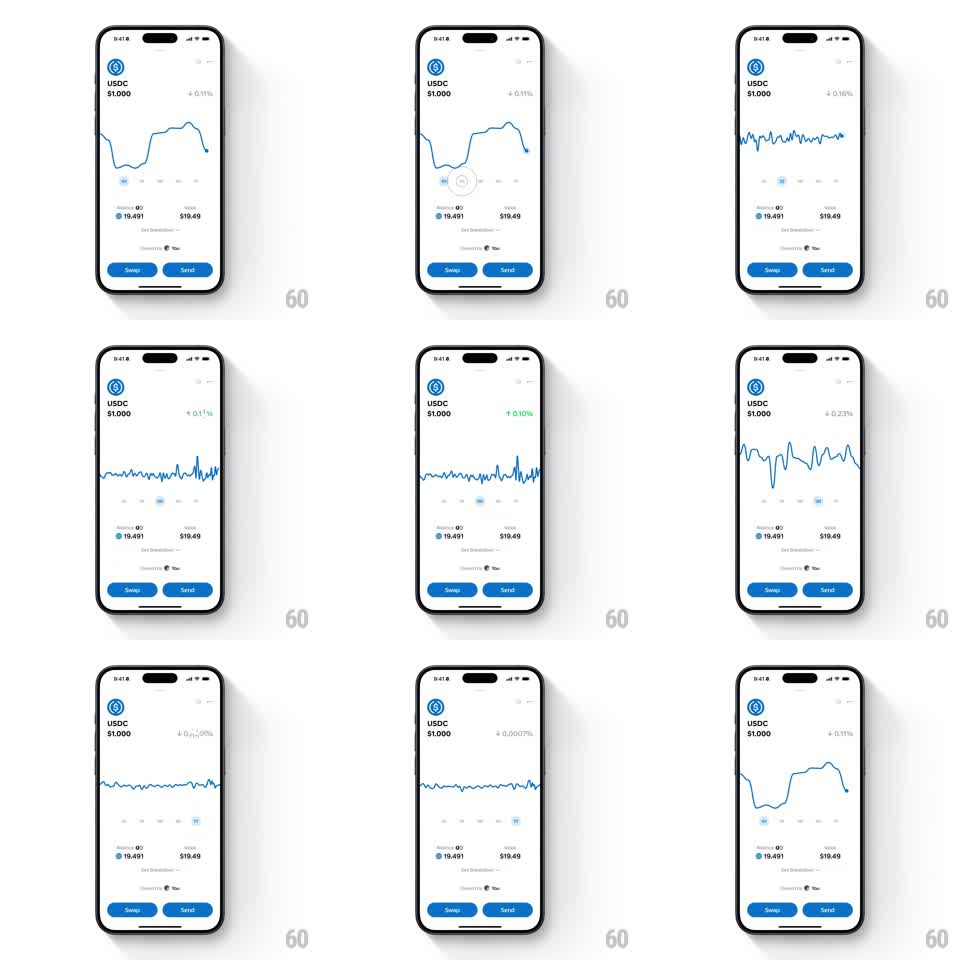

Media
Frame-by-frame

Rebuild this animation 1:1: Family's fluid price chart - on the light USDC detail screen, switching the timeframe tabs morphs the blue line chart elastically into the new series shape while the percentage change flips color and the tab indicator slides with spring.

Rebuild this animation 1:1: Family's fluid price chart - on the light USDC detail screen, switching the timeframe tabs morphs the blue line chart elastically into the new series shape while the percentage change flips color and the tab indicator slides with spring. ## Integration Integration: stack-agnostic spec - springs given as stiffness/damping, timed motions as duration + curve; map every value to your framework and animation library of choice. ## Scene Light token detail: USDC logo, "USDC $1.000", a small percent change (red negative / green positive), a blue stroke line chart, a timeframe tab row under the chart, "Balance 19.491 / $19.49" row, "Get breakdown" link, "Powered by You" footer, and blue "Swap" / "Send" pills at the bottom. ## Motion spec Pattern: elastic line morph with sliding tab indicator. - Tap a timeframe tab: the indicator pill slides to the new tab (spring ~340/22, 300ms), the label colors swapping (active dark, inactive gray). - The line chart morphs to the new series: control points interpolate (500ms, ease-in-out) so the line fluidly bends from the old shape to the new - peaks stretching, valleys filling - never a hard cut. - A scrubber dot rides the line's right end during the morph (tracking the interpolated path). - The percent change updates with a digit roll (200ms) and crossfades color (red for down, green for up, 200ms). - Repeated tab switches re-morph from the current interpolated state, so rapid taps chain smoothly. ## Calibration - The line is a 2pt blue stroke with rounded caps; no fill gradient. - The chart's vertical scale re-normalizes per timeframe with the same 500ms ease. ## Reduced motion The chart crossfades between series (250ms) without path interpolation. ## Don't miss - The percent sign and arrow sit top-right and flip red/green with the series direction. - The Swap / Send buttons are identical blue pills, side by side, and never move.